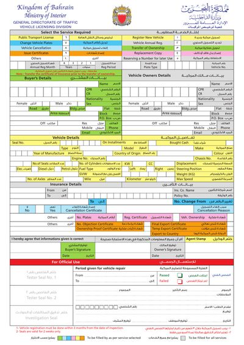

Online PDF Editor › Forms › Vehicle Licensing form
Fill in the Bahrain Vehicle Licensing form online
The Ministry of Interior's General Directorate of Traffic form for registration, renewal, transfer of ownership and other vehicle services. Type your details into the boxes, then download the filled PDF to print or send.
Your CPR, address and vehicle details stay on your device.
